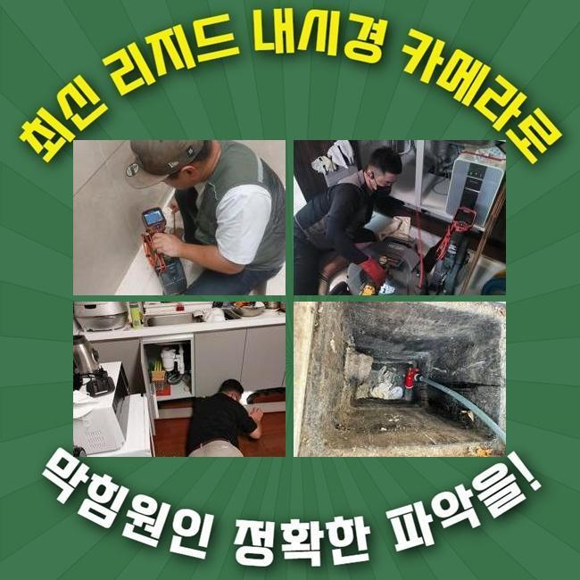
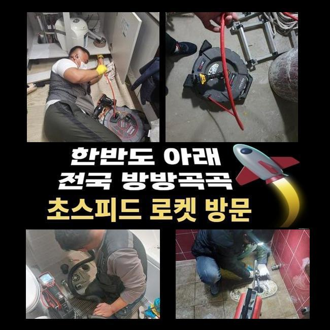
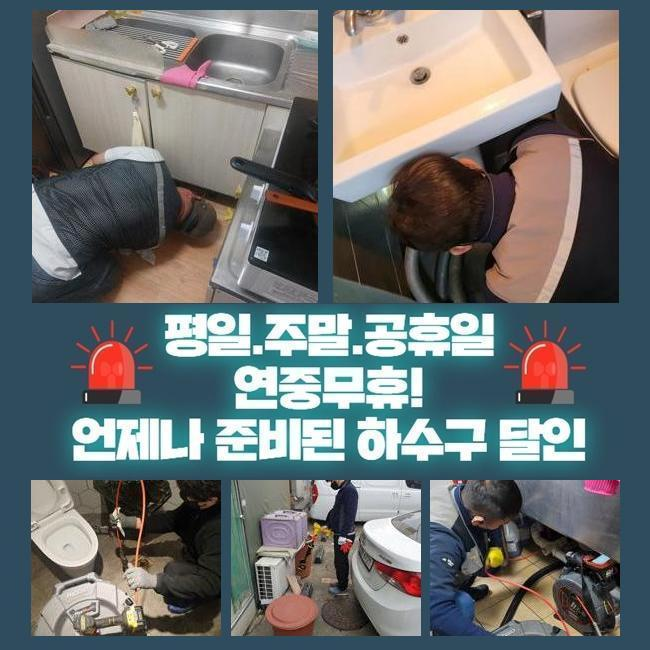
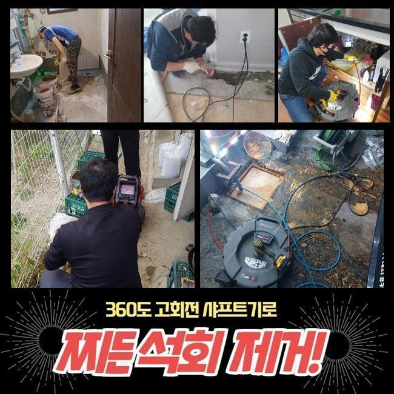
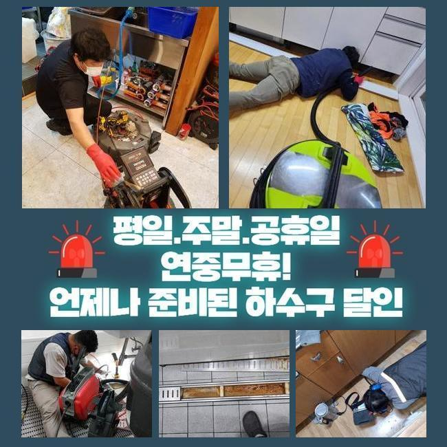

🏠 용인 역북동하수도역류 백암면 하수구뚫어주는업체 해결방법
용인 역북동 싱크대막힘 전문 시공 후기

📋 작업 개요
- 위치: 용인 역북동, 역북동, 용인
- 서비스 유형: 싱크대막힘, 하수구막힘, 배관막힘, 맨홀막힘, 역류해결, 뚫는업체, 배관청소, 고압세척, 악취차단
- 작업 일시: 2025. 2. 24. 20:40
- 업체명: 하수구수사대 (010-5615-2118)
🔍 문제 상황
용인 역북동하수도역류 백암면 하수구뚫어주는업체 해결방법
얼마 전 한 식당건물에서 하수구의 불능으로 당장 가게 오픈을 못한다며 하시며 빠른 방문이 필요하다는 요청을 접수했습니다
음식점과 같은 매장은 주방의 하수구가 차단되는 증세로 주방 시설물을 사용하지 못한다면 조리나 청소를 하지 못하니 한동안 문을 닫아야 할겁니다
얼른 수돗물이 소통되게 해줘야 고객님이 입을 손해를 감축할 수 있기 때문에 지체없이 출장가서 작업을 시행하기로 결정했습니다
맞이해주신 고객님께서는 배수구가 지장이 생긴건지 물 배출이 느릿해지고 바깥에 있는 커다란 하수구로부터 물이 범람하는 일도 더해진 상황이라고 하셨어요
이런 케이스라면 바닥에 난 배수구멍을 먼저 고쳐드리고 야외 시설물도 관통시켜드려야 하기에 간단하지만은 않은 시공건이 될 듯 했습니다
계획적인 접근을 위하여 설비의 노후도나 오염도 등을 조사해본 뒤에 이번 업무의 소요시간을 분석한 다음 안내합니다
배관들이 얽혀있거나 피해가 광범위할 시 결점없이 개선하고자 한다면 시간이 더 필요할 때가 있습니다
바깥쪽의 하수시설 내부를 바라봤더니 맨홀부터 산화가 진행된 상태에다 근처의 바닥까지도 습기가 차서 지저분한 상태였어요
작업 중의 결함이 최대한 없을 수 있도록 집중력을 발휘하여 작업에 임해야겠다 생각한 뒤 본격적인 관측에 들어갔어요

🔎 원인 분석
💡 전문가 진단: 정밀 진단 장비를 사용하여 슬러지의 고착 여부를 판명하고 타격/세척 작업을 실시했습니다.
불빛을 비춰서 내부를 보자 오염물질이 감별됐습니다
혼탁한 슬러지 덩어리가 부상해 있는 걸 바로 확인할 수 있는 수준이었기 때문에 진입부의 청소 먼저 착수하여 오염을 씻어줘야 했습니다
주방 측면의 배수구부터 통로를 형성해준 이후에 배관을 보는 내시경기를 내려보내서 확인하게 되는데요
안팎의 배관들이 이어져있는 전체 구조를 분석한 다음엔 고압세척기의 파워로 여기저기에 때처럼 껴있는 기름때를 공격해야겠다고 정하게 되었습니다
이 수준에서는 아무리 카메라를 켜봐도 내부를 인식하기 어려울 듯 하여 안에 고인 물을 빼내는 석션 작업을 우선실시해야 했어요
이 석션기기는 마치 청소기처럼 빨아당기는 힘이 강하며 관로에 자리한 하수와 노폐물들을 효율적으로 바깥으로 투출되도록 하는 기능을 맡아줍니다
흡입력이 상당한 편이라 웬만한 딱딱하지않은 물체들은 쉽게 끌어올려지면서 집수통 속으로 모이게 됩니다
접착성 물질이거나 벽과 한몸처럼 말라붙은 물질들은 잘 떨어지지 못하니 석션기의 가동만으로는 배관을 시원하게 뚫어내는 경우가 미미합니다
하지만 처음과 마무리에 항상 석션장비를 작동시키고 있을만큼 배수로 기능을 되돌리는 업무를 잘 끝내려 한다면 항상 써야하는 통과의례에요
석션의 가동으로 관로 입구를 쾌적하게 조성해두고서 다음으로 카메라를 내려보냈죠
이 내시경기기 덕분에 땅바닥 아래에 깔린 채 색다른 식으로 설치된 배수관일지언정 구석구석 검사를 해보면서 오물과 오염의 정도에 대해서 분석해 낼 수 있습니다

🔧 작업 과정
이번 현장을 들여다보니 뭉쳐있는 이물질 덩어리와 기름질들이 다수 발견됐습니다
쉽게 없어지지 않는 슬러지가 오늘 다룰 하수구 막힘의 유력한 사유라는 결론에 이르렀습니다
조리하다가 바닥 배관으로 폐기된 기름기가 모여서 점점 유속을 느리게 만들었고 이 장애물에 부딪혀서 빠져나갈 틈이 없다보니 내부 압력이 변화하면서 바닥인 윗쪽으로 향했던 것 같아요
석션과 샤프트를 병행해서 정화작업을 거치면서 하수의 종착지인 야외 쪽의 하수구도 보완을 해드려야 했는데요
샤프트는 스케일링 기기이며 말단에 쇠사슬이 달려있는 모양입니다
석션기로는 수습이 안되는 단번에 제거하기 힘든 덩어리거나 마치 망부석처럼 제자리에 붙어버린 고착물을 긁어내거나 잘게 쪼갤 수 있어요
앞서 사용한 샤프트와 석션 내부관찰용 카메라까지 빠짐없이 놓치지 않고 적용해야지 청소가 만족스럽게 끝나며 가로막혀있는 배수로의 역시도 뚫어낼 수 있습니다
배관 특성을 알아봤더니 쉽게 끝날 문제 같지는 않아서 고압수를 쏘는 활동도 추가할 필요가 보였는데요
스케일링과 흡입을 반복해서 하수의 이동이 어느 정도 좋아졌다는 걸 체감하고 다음으로 고압청소기를 세팅해하여 내부 정화를 이어갔습니다
강력하게 출수되는 물을 타겟팅하여 쏴주는 호스를 활용해서 이물질의 밀집도가 높은 구간을 집중타격했습니다
집중력있는 기기의 사용으로 통로를 가로막던 더러운 슬러지를 흔적없이 삭제시켰어요
청소기기를 돌리기 전에 내시경으로 관로의 형상과 심각도를 관심있게 조사해보고 집중력있는 청소 작업을 실시해서 많게만 느껴졌던 오물들을 빼내고 없애는 것에 당당하게 성공하게 됐어요
오늘의 프로세스를 끝내고 내부 검토를 다시 해보니 전이랑은 딴판으로 지저분한 여기저기 부착되어있던 침전물이 마법처럼 사라졌으며 벽면도 스케일링을 해준 덕에 미끈하게 뚫린 배관의 모습도 인식할 수 있게 됐네요
파이프 안에 누적되면서 중단되어 있던 오래된 고인물도 사라지고 장치에 묻던 이상물질들도 제거됐어요
아무래도 식당 건물이라면는 식품을 다루는 양이 일반 주택과는 차원이 달라서 사용 중에 하수구가 막히는 경우의 수가 많겠죠
손질한 식자재의 부속물이나 꾸덕한 기름기가 관로로 흘러가지 않게 싱크대를 쓰시는 고객님께서도 오염을 방지해야 합니다
성급하게 마무리하지 않고 통수 테스트를 해보면서 시공이 결함없이 처리되었는지 더블체크를 해보게 됩니다


✅ 작업 완료
싱크대 밸브에서 물을 모아서 폐기하면서 마찬가지로 청소한 옥외시설까지 중간에 멈추는 느낌 없이 물이 잘 방출되는지 예리하게 관찰하는 단계입니다
아래로 내려보낸 물이 시원하게 이동하는 걸 직접 확인하게 되었습니다
하수배관이 정상화가 됐으니 몇번 더블체크를 하고 자리를 뜨게 됐습니다
하수의 처리가 적절하지 못할 때는 돈이 아깝다는 생각에 셀프 뚫음을 시도하시다가 상태가 더 심화되기도 합니다
막힘 발발 시 바로 전화주신다면 얼른 장소로 향하여 물막힘이 생긴 원인 규명 후 뚫어드리니 기억해 두셨으면 좋겠습니다



⚠️ 주방 싱크대 배관 막힘 예방 수칙
- ✅ 기름기가 묻은 식기나 프라이팬은 설거지 전 키친타올로 반드시 기름때를 닦아내세요.
- ✅ 주기적으로 싱크대 개수대에 뜨거운 물을 가득 받아 한 번에 내려 배관 내부 기름을 씻어내세요.
- ✅ 배수구 거름망을 미세한 필터로 사용하시고 음식물 찌꺼기가 틈으로 새어 들지 않게 관리하세요.
- ✅ 베이킹소다와 식초를 뜨거운 물과 함께 일주일에 한 번씩 부어주면 배관 살균과 막힘 예방에 좋습니다.
💡 핵심 정리
- 확실한 장비 작업(내시경 점검 및 샤프트 스케일링)으로 원인을 뿌리 뽑습니다.
- 작업 후 1년 이내에 동일한 부위 재발 시 100% 무상 A/S 서비스를 보장합니다.
- 서울 · 경기 · 인천 전 지역에 24시간 언제든 긴급 출동할 수 있도록 항시 대기 중입니다.
❓ 자주 묻는 질문 (FAQ)
🚨 용인 역북동 싱크대막힘 문제로 고민이신가요?
정확한 원인 진단과 확실한 시공으로 재발 없는 해결을 약속드립니다.
24시간 긴급 출동 | 서울 · 경기 · 인천 전지역 | 1년 내 재발 시 무상 A/S